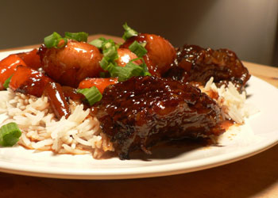

David Chang's short ribs
Just thinking of these short ribs a few hours after dinner is driving me wild with the urge to open the fridge and eat the leftovers. I first ate at Momofuku Noodle Bar in October and loved it. I went again with my parents the following month, and I’ve been thinking about it ever since. After making this recipe, which was part of the New York Times’s several-part feature on David Chang, Momofuku’s chef and owner, I’m determined to make my way over there again as soon as I can. Sabena is obsessed with having their crawfish, so maybe a trip is in order this week or next.
I haven’t made short ribs since December, when I made an orange-cumin daube of them twice. The dish I made this weekend reminded me what a great cut of beef the short rib is: it’s cheap, it’s easy to cook well, and it can be as tender as butter.
David Chang’s recipe involved several ingredients I hadn’t used in a stew before, like mirin, sake, and pear juice. I wasn’t sure what to expect. It ended up looking just like any other beef stew, but the aroma and taste were exotic. And the meat…the meat was meltingly tender and flavorful with a delicious, crisp crust. I reduced the sauce to almost a syrup.

Despite its excellent results, I think the Times’s recipe for this dish is poorly written and weird, and halfway through it I started to get nervous. Step 3 tells you to strain the liquid and, if you like, to refrigerate it overnight. However, it doesn’t tell you what to do with the vegetables, nor does it tell you to put the meat and sauce back together before refrigerating. That tells me that I should refrigerate the meat and sauce and vegetables separately, which I know doesn’t end well. So, I didn’t strain it at all; I just let it cool off the heat and then stuck it in the fridge. Before reheating it tonight I lifted off a thick layer of fat, and I simmered it for about an hour while I finished the rice and vegetables.
Braised Short Ribs, Adapted from David Chang
1½ cups pear or apple juice
1 cup sake
1 cup mirin
½ cup sugar
1 cup soy sauce
Salt and freshly ground black pepper
2 tablespoons chopped garlic
10 cloves crushed garlic
1 tablespoon sesame oil
2 tablespoons neutral oil, like corn or
grapeseed
4 to 5 pounds short ribs
2 large onions, peeled and roughly chopped
1 pound carrots, peeled and cut into chunks
2 tablespoons butter
8 to 12 small potatoes, preferably fingerlings, trimmed
½ cup chopped scallions
4 cups cooked white rice.
- Preheat oven to 350 degrees. In a saucepan, combine juice, sake, mirin, sugar, soy sauce, about 20 grinds of pepper, both forms of garlic, sesame oil and 1½ cups water. Bring to a boil, then simmer.
- Put corn or grapeseed oil in a large ovenproof braising pan or skillet over medium-high heat and add ribs, seasoning them liberally with salt and pepper. Brown well on one side, moving them around to promote even browning. Turn, add onions and half the carrots, and brown other side, stirring vegetables occasionally.
- Carefully pour braising liquid over meat and bake, bone-side up and submerged in liquid (add water or juice if necessary), for 3 to 4 hours, until meat falls from bones. Cool ribs in liquid for 1 hour, then remove; strain liquid. At this point, ribs and liquid can be covered and refrigerated overnight.
- Remove bones from ribs. In a pot, combine meat with braising liquid; heat to a boil then simmer, reducing liquid until syrupy. If it seems too thick, thin with a bit of water.
- About ½ hour before you are ready to serve, put butter in a skillet and add potatoes and remaining carrots. Cook, stirring occasionally and seasoning with salt and pepper, until browned and nearly tender, about 20 minutes. Add to meat. Taste mixture and adjust seasonings if necessary, then garnish with scallions and serve on rice.
Comments
Wow! They look amazing. The picture is making me crave short ribs and it’s only 10:00 in the morning!
Do you think these would be too inappropriate to serve in June? I’m thinking a Father’s Day dinner since short ribs are Poppy’s favorite dish.
I don’t think so. The Asian flavors make it seem kind of summery, compared to other stews anyway. I certainly intend to make them again before summer is over.
Did you follow the direction to remove the meat from the bone? My instinct would be not to do this because we like to kind of pick up our short ribs and knaw on them. Also, do you think you could serve these on the day you made them or do you think the sauce would be too greasy? I wanted to make them today. (And eat them tonight.)
Your photo and descriptions makes me want to eat some of these immediately. And I feel very sorry that I left New York before visiting Momofuku.
Glad to find your site, though!
Momofuku will be here for a long time. Thanks for reading! You should give the ribs a try.
Good for you for trying this. I took one look at the recipe and said no thanks.
Thanks, Luisa. Not a short rib fan? Or did something else about the recipe turn you off?
I love this recipe, I’m going to try it right now in my pressure cooker and I bet it’s going to take about 1/2 an hour for falling-off-the-bone deliciousness. I’ll let you know how it goes.
I have made and LOVED Chang’s Short Ribs. When I first made them I also did not strain the liquid; I refrigerated them overnight, removed a lot of congealed fat (sorry for that word, sounds icky); and served the potatoes and carrots separately. Wonderful!
Add a comment